HOME
Week 2:Laser Cutting
This week I learn how to operate the laser cutter.

Step 1
This week I was tasked with using the laser cutter to create five swatches of varying material with the settings used to create them engraved (Vector and Raster Speed, Power, and Frequency) additionally we are tasked to create a box with a living hinge out of 1/8 plywood.
.
the designing process for the swatches was relatively simple as the swatch itself didn't have to be overly complex it just had to contain the setting used. I didn't go above and beyond with the design but I did add the name of the material used in addition to an opening that I could put a thumbtack into. 
after creating the swatch in adobe illustrator the file is transferred to a computer in the lab. After that, the file will be printed after the design is brought to the leftmost corner, additionally, in the printed settings the placement option must also be in the upper left corner to prevent loss of material. The printed file will be transferred over to two different applications: Epilog App and Epilog Engraver. The two apps have the purpose of allowing file information to be given to the laser cutter. 
The program will show the inserted design and differentiating what's being engraved from what's being cut with the engraved portion being black while the cut portion is red. In this program you are also able to change the laser cutter setting to actually properly cut your material as some settings will hurt the machine by being too powerful or the settings may be too weak and you waste material. 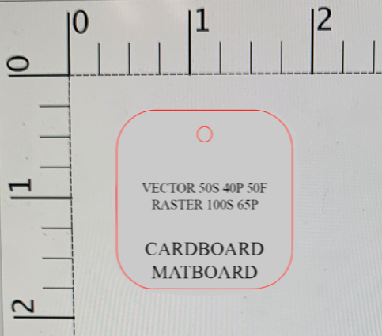
After all the information is transferred over to the laser cutter the is some prep work needed to be done before I can go cut. First, we turn on the air compressor followed by the exhaust before turning on the laser cutter, the reason for this would be to prevent a fire that would engulf the material, granted there will be something called a tail fire due to the fact we're working with a laser. After the laser cutter is turned on we have to jog and focus the laser, jogging the laser essentially just moves it we want to move it to the upper left corner of the material or as close to another cut in what material is being used in order to not waste anything. Focusing the laser will change the height of the laser cutting bed so that the laser can cut properly without hurting the bed or not cutting through the material. To find out if the bed is the correct distance away from the laser we're going to use a metal measuring device that should be barely touching the material from there if everything is in the order we need to make sure the laser's origin is correct this can be achieved with the jog function by pressing down on the joystick when we are at the desired starting point. If that is all complete we can start laser cutting but you need to be in the area in case a fire was to engulf your cut.


 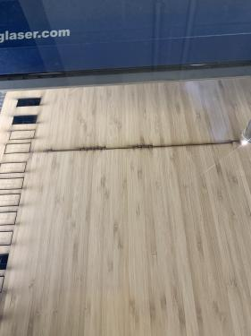
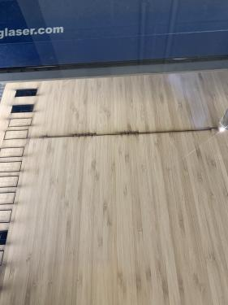
The same process is repeated for all the swatches and most came out without issue aside for one or two recuts in the acrylic. There was also a mix up in my understanding of the instructions and I made two repeat swatches that I then turned into a paper and a magazine paper swatch. 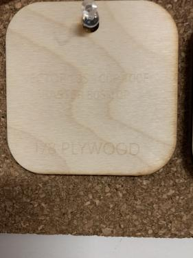 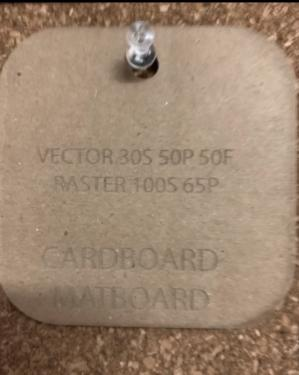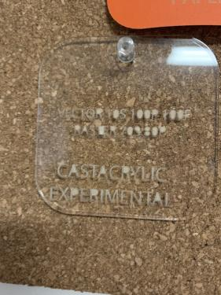 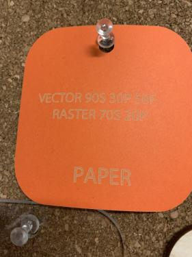 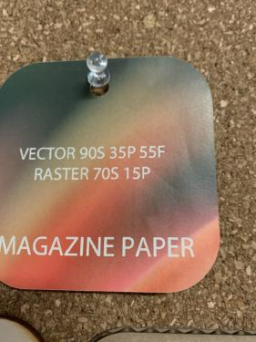
The next thing to do in my assignment would be to laser cut a flexbox, here is where I had the most problems but only in the printing process. First I went to this website: https://www.festi.info/boxes.py/index.html and selected the flexbox design, from there I simply put in the settings that I want after playing around with it for a bit. There I go off to generate the image that I can then open in adobe illustrator. The preset design I can export after changing the stroke weight to 0.01mm anything higher will just be an engraving which will be added to one section of the box, I will be engraving my first and last initials.  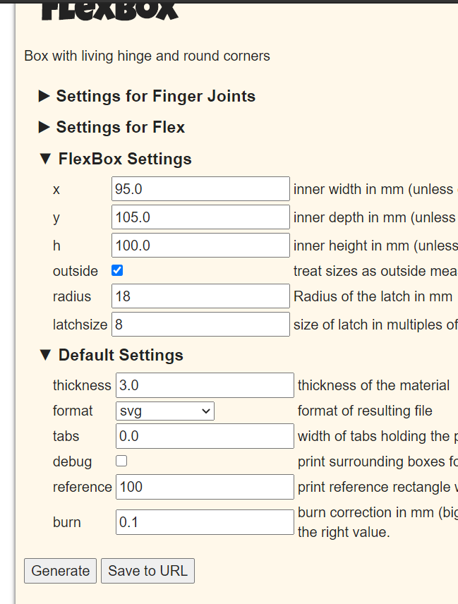 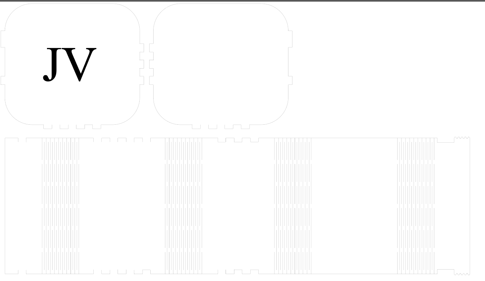
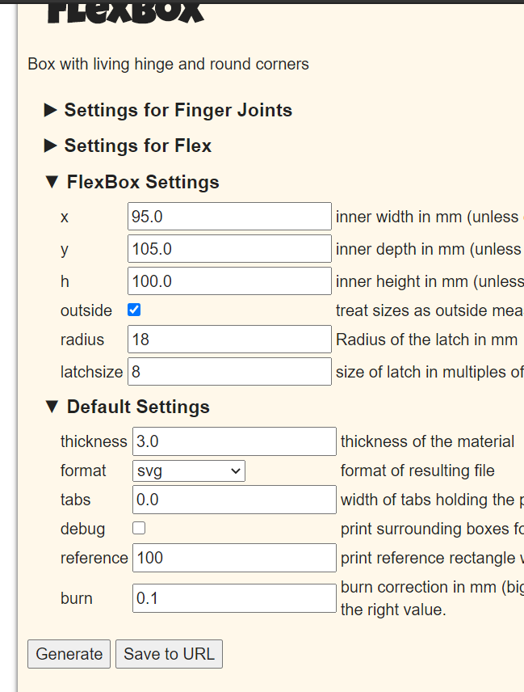 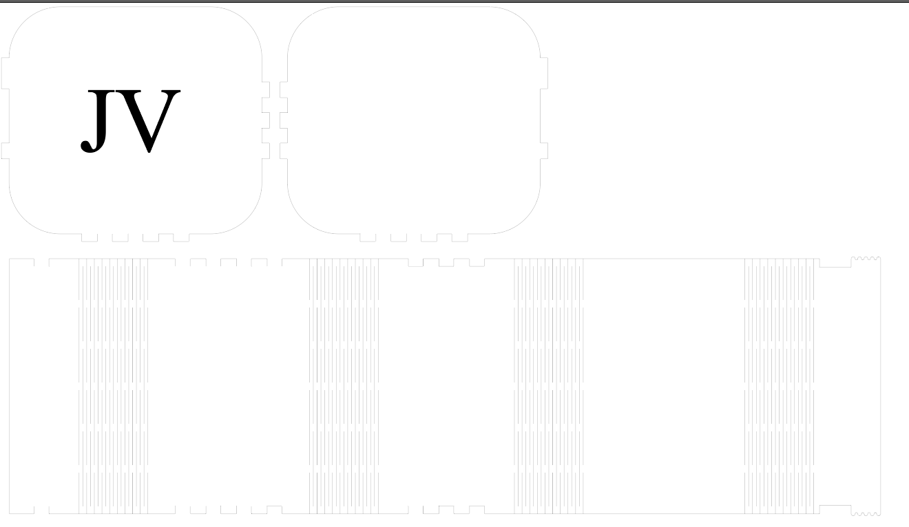
After I make sure everything is in order and export everything to the epilog app and engraver. I grabbed the 1/8th wood material made sure my settings were usable and started cutting. The first cut was unsuccessful as it didn't go through the material fully only bits and pieces of it, ultimately if I did a second cut it would have gone through but I didn't think of that at the moment. From there, things devolved there were several attempted cuts with several failures. I attempted the multi cuts by the 2nd failure in addition to asking help from the person on-site to ensure that the settings used should work on the material given. The problem itself was the material wouldn't cut out around properly while the flexible areas would, there were a few instances of the flexible portions of the material turning to ash because of multiple run-throughs which forced me to stay 2 more hours than expected. Eventually, after many headaches and unfortunately wasted material we finally got a working cut tragically one of the flex's snapped but I wasn't going to go through that once more and the box could assemble. Everything was able to connect with each other and the box was complete. 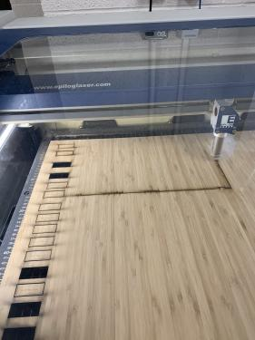 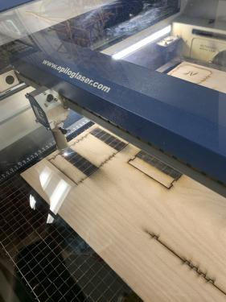 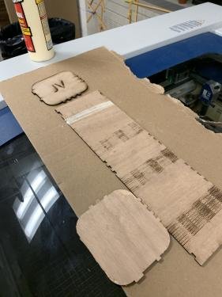 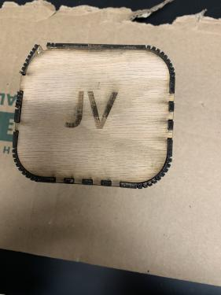 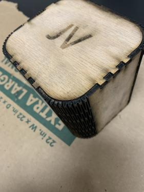